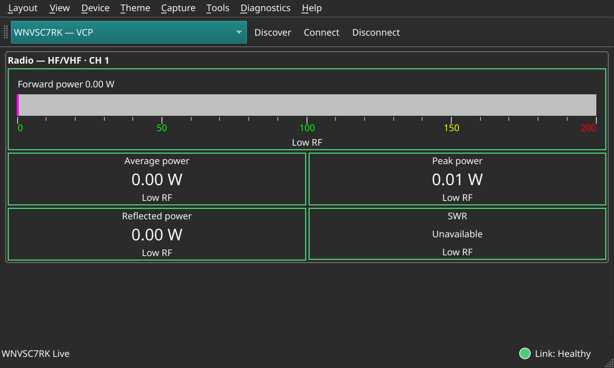

RayWn2App on Ubuntu and Linux Mint
Start with the installation package supplied with your WN-2 or downloaded from RF StateSide. Keep the instructions supplied with that package: its exact filename and setup prompts may differ between releases.
Live telemetry from a physical WN-2 was verified over both VCP and D2XX on Ubuntu and Linux Mint 22.3 x64. Mint was also tested launching from the Cinnamon menu.
Install and open
- Choose the Ubuntu/Linux package for your computer. A typical Intel or AMD desktop uses the x86_64 package; do not use the Raspberry Pi ARM64 package.
- Extract the original .tar.gz on the Linux computer to preserve filenames and executable permissions. Follow the included installation instructions. For a package containing install.sh, open a terminal in that folder and run sh ./install.sh.
- Follow any dependency instructions from the installer. Set up WN-2 USB access separately using the instructions below.
- Open RayWn2App from the application launcher as your normal desktop user.
Connect by USB
Connect and power the WN-2, press Discover, select its serial number and VCP, then press Connect. A serial port may be named /dev/ttyUSB0; that name can change when other USB equipment is connected. Use the meter's serial number to identify it. The illustration shows a physical VCP connection.
Set up VCP if no serial port appears
Ubuntu and Mint include the ftdi_sio serial driver. If the powered WN-2 does not get a serial port, register its USB ID in a terminal. This registration lasts until reboot or until the driver is unloaded.
sudo modprobe ftdi_sio printf '0403 b028\n' | sudo tee /sys/bus/usb-serial/drivers/ftdi_sio/new_id
If the port appears but access is denied, check your account's membership in the dialout group. On Ubuntu and Mint, an administrator can add your desktop user with sudo usermod -aG dialout "$USER". Sign out and back in before reconnecting.
Set up D2XX
- Download the Linux x86-64 package from FTDI D2XX Drivers. Extract it and follow FTDI's instructions. The Raspberry Pi needs the matching ARM64 package.
- In RayWn2App, open Device → Settings → Application. Under D2XX library, use Browse library to select the full path to
libftd2xx.so. Save and restart RayWn2App so it uses the new library. - Have your Linux administrator grant your desktop user access to the WN-2 USB device (vendor
0403, productb028). D2XX needs access to the USB device itself. Serial-port access throughdialoutis sufficient for VCP only.
Switch between VCP and D2XX
- With the transmitter in receive, click Disconnect in RayWn2App and close any other application using this meter.
- On a system with the optional WN-2 USB-mode helper already installed, run
sudo raywn2-usb-mode d2xxto release the meter's serial-driver binding. To return to VCP, runsudo raywn2-usb-mode vcp. The RayWn2App archive does not install this helper. On a system without it, have your Linux administrator release only the WN-2 interface fromftdi_siofor D2XX. To return to VCP, unplug and reconnect the USB cable while the VCP ID is registered, or repeat the VCP setup after reboot. - Click Discover, select the entry for the meter's serial number and the intended transport, then click Connect. Check that the link shows Live.
Permissions and desktop services
If the meter is listed but cannot open, close other programs using it and check that the USB permissions above are in place. Do not run the entire application as administrator as a workaround. A desktop keyring prompt can appear when saving an email or MQTT password; unlock it locally. Select your intended playback and microphone devices in the relevant audio settings.

RayWn2App on Ubuntu Linux, receiving live measurements from physical WN-2 WNVSC7RK with RF off. Select image to enlarge.

Check your first readings
The status bar should show your meter Live and its link healthy. Load a supplied layout and bind its instruments to that same WN-2. With the transmitter in receive, near-zero power, Low RF and unavailable SWR are normal. They do not mean that the USB connection failed.
RF couplers are factory calibrated and do not require additional calibration. Optional user reference matching is available if you want readings to match another meter. See First station connection, Device Settings and Connection problems.